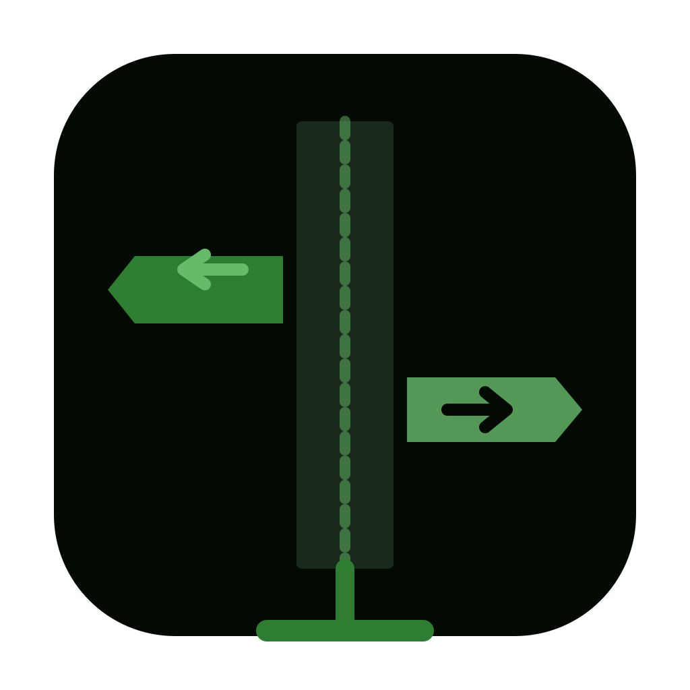
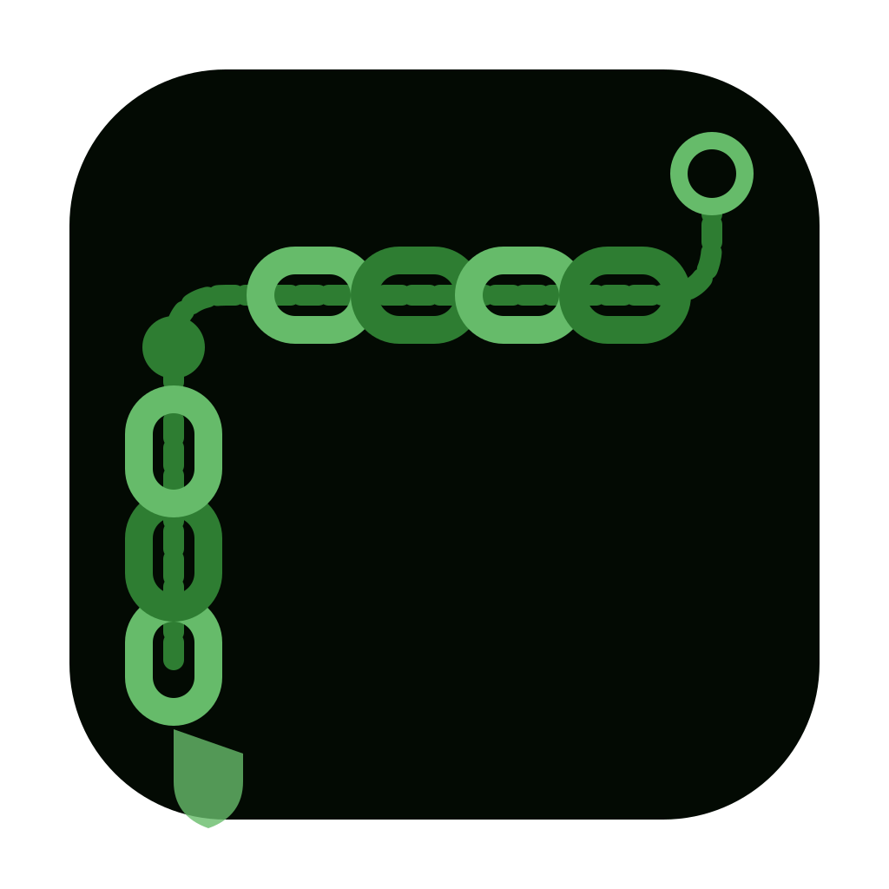
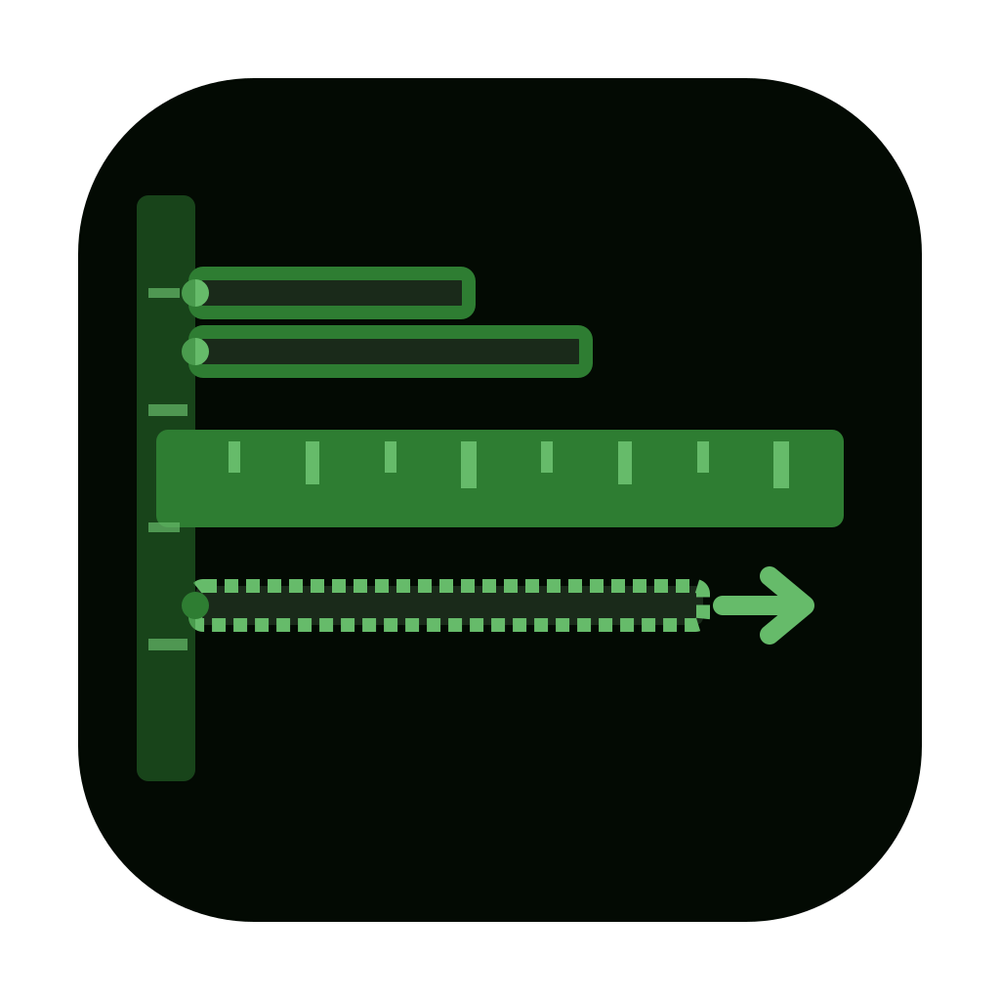
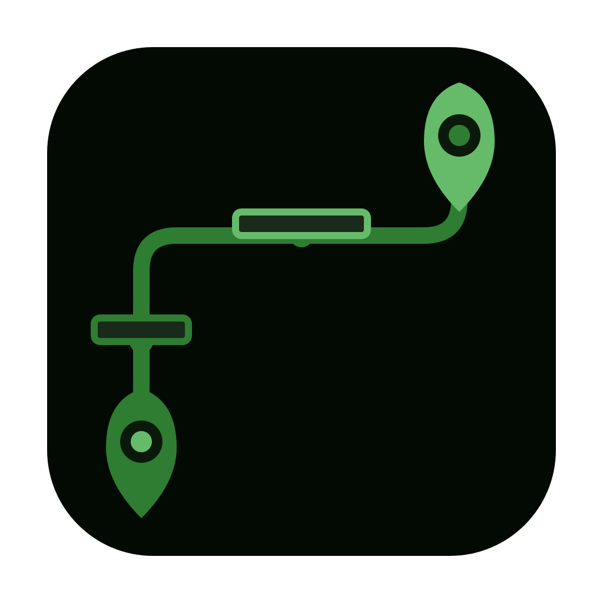

Path.Guard — 아이콘 후보 3차
Candidate_20260320_0104 | 시스템 PATH 환경변수 관리/검증 도구
icon_01.svg
경로 방패 + 체크마크

icon_02.svg
도로 표지판 방향

icon_03.svg
체인 경로 연결
icon_04.svg
경비원 + 폴더

icon_05.svg
눈금 측정자 정렬
icon_06.svg
미로 출구 찾기
icon_07.svg
나침반 방향 가이드

icon_08.svg
주소 핀 + 경로선
icon_09.svg
망치 + 렌치 경로 수리
icon_10.svg
지뢰밭 안전경로